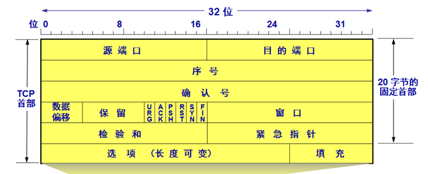

网络基础知识
网络基础知识
1、简述 ISO/OSI 七层模型的分层与作用
| 分层 | 作用 |
|---|---|
| 应用层 | 应用系统，提供用户服务 例如：HTTP、HTTPS、FTP、Telnet、SSH、SMTP、POP3 |
| 表示层 | 把数据转换为能与接收者的系统格式兼容并适合传输的格式，数据表示，加密，压缩 |
| 会话层 | 负责在数据传输中设置和维护计算机网络中两台计算机之间的通信连接。确定数据是否需要进行网络传递 分流网络传递还是本地保存 |
| 传输层 | 对数据分组，对报文进行分组(发送时)、组装(接收时)提供传输协议的选择：TCP (传输控制协议) :可靠的，面向连接的传输协议 (可靠，准确) (慢)UDP (用户数据报协议) :不可靠的，面向无连接的传输协议 (快) (不可靠)。端口封装，差错校验，滑动窗口，留空 |
| 网络层 | 网络层（Network Layer）决定数据的路径选择和转寄，将网络表头（NH）加至数据包，以形成分组。网络表头包含了网络资料。例如:互联网协议（IP）等。1.IP 地址编址 2.路由选择 3.静态路由 4.动态路由 |
| 数据链路层 | 数据链路层（Data Link Layer）负责网络寻址、错误侦测和改错。1.MAC 地址编址 2.MAC 地址寻址 3.差错校验 |
| 物理层 | 物理层（Physical Layer）在局域网上发送数据帧（Data Frame）1.数据实际传输 2.电气特性定义 |
2、TCP/IP 四层模型与作用？
| 分层 | 协议 |
|---|---|
| 应用层 | HTTP、HTTPS、FTP、Telnet、SSH、SMTP、DNS |
| 传输层 | TCP、UDP |
| 网络层 | ICMP、IGMP、IP、ARP、RARP |
| 数据链路层、物理层 | PPP、PPPOE |
3、TCP 协议与 UDP 协议工作在哪一层，作用是什么？
传输层，对报文进行分组(发送时)、组装(接收时)提供
当进程需要传输可靠的数据时应使用 TCP，当进程需要高效传输数据，可以忽略可靠性时应使用 UDP 协议。
4、简述 TCP 三次握手的过程。

- 第一次握手：Client 将标志位 SYN 置为 1，随机产生一个值 seq=J，并将该数据包发送给 Server，Client 进入 SYN_SENT 状态，等待 Server 确认。
- 第二次握手：Server 收到数据包后由标志位 SYN=1 知道 Client 请求建立连接，Server 将标志位 SYN 和 ACK 都置为 1，ack=J+1，随机产生一个值 seq=K，并将该数据包发送给 Client 以确认连接请求，Server 进入 SYN_RCVD 状态。
- 第三次握手：Client 收到确认后，检查 ack 是否为 J+1，ACK 是否为 1，如果正确则将标志位 ACK 置为 1，ack=K+1，并将该数据包发送给 Server，Server 检查 ack 是否为 K+1，ACK 是否为 1，如果正确则连接建立成功，Client 和 Server 进入 ESTABLISHED 状态，完成三次握手，随后 Client 与 Server 之间可以开始传输数据了。
5、简述 TCP 包头的内容。

-
源端口和目的端口：各占 2 个字节，分别写入源端口和目的端口。IP 地址 + 端口号就可以确定一个进程地址
-
序号/序列号（Sequense Number，SN）：在一个 TCP 连接中传送的字节流中的每一个字节都按顺序编号。该字段表示本报文段所发送的数据的第一个字节的序号。初始序号称为 Init Sequense Number, ISN（序号/序列号这个字段很重要，大家留个印象，下文会详细讲解） 例如，一报文段的序号是 101，共有 100 字节的数据。这就表明：本报文段的数据的第一个字节的序号是 101，最后一个字节的序号是 200。显然，下一个报文段的数据序号应当从 201 开始，即下一个报文段的序号字段值应为 201。
-
确认号 ack：期望收到对方下一个报文段的第一个数据字节的序号。若确认号为 N，则表明：到序号 N-1 为止的所有数据都已正确收到。
-
数据偏移（首部长度）：它指出 TCP 报文段的数据起始处距离 TCP 报文段的起始处有多远。这个字段实际上是指出 TCP 报文段的首部长度。
-
保留：占 6 位，应置为 0，保留为今后使用。
-
标志位：
标志位 作用 URG 紧急指针（urgent pointer）有效。 ACK 确认序号有效 PSH 接收方应该尽快将这个报文交给应用层。 RST 重置连接。 SYN 发起一个新连接。 FIN 释放一个连接。
不要将确认序号 Ack 与标志位中的 ACK 搞混了。
确认方 Ack=发起方 Req+1，两端配对。
6、简述 TCP 四次挥手的过程。

- 第一次挥手：Client 发送一个 FIN，用来关闭 Client 到 Server 的数据传送，Client 进入 FIN_WAIT_1 状态。
- 第二次挥手：Server 收到 FIN 后，发送一个 ACK 给 Client，确认序号为收到序号+1（与 SYN 相同，一个 FIN 占用一个序号），Server 进入 CLOSE_WAIT 状态。
- 第三次挥手：Server 发送一个 FIN，用来关闭 Server 到 Client 的数据传送，Server 进入 LAST_ACK 状态。
- 第四次挥手：Client 收到 FIN 后，Client 进入 TIME_WAIT 状态，接着发送一个 ACK 给 Server，确认序号为收到序号+1，Server 进入 CLOSED 状态，完成四次挥手。
7、172.22.141.231/26，该 IP 位于哪个网段？该网段拥有多少可用 IP 地址？广播地址是什么？
A类IP 10.1.1.1 标准子网掩码: 255.0.0.0
子网掩码二进制: 1111111.00000000.00000000.00000000
IP地址前8位是网络地址,后24位是主机地址
10.0.0.0-10.255.255.255
B类IP 172.16.1.1 标准子网掩码: 255.255.0.0
子网掩码二进制: 1111111.11111111.00000000.00000000
IP地址前16位是网络地址,后16位是主机地址
172.16.0.0-172.31.255.255
C类IP 192.168.1.1 标准子网掩码: 255.255.255.0
子网掩码二进制: 11111111.1111111.11111111.00000000
IP地址前24位是网络地址，后8位是主机地址
192.168.0.0-192.168.255.255
8、简述 IP 地址的分类。
A 类：（1.0.0.0-126.0.0.0）（默认子网掩码：255.0.0.0 或 0xFF000000）
第一个字节为网络号，后三个字节为主机号。该类 IP 地址的最前面为“0”，所以地址的网络号取值于 1~126 之间。
一般用于大型网络。
B 类：（128.1.0.0-191.255.0.0）（默认子网掩码：255.255.0.0 或 0xFFFF0000）
前两个字节为网络号，后两个字节为主机号。该类 IP 地址的最前面为“10”，所以地址的网络号取值于 128~191 之间。
一般用于中等规模网络。
C 类：（192.0.1.0-223.255.255.0）（子网掩码：255.255.255.0 或 0xFFFFFF00
前三个字节为网络号，最后一个字节为主机号。该类 IP 地址的最前面为“110”，所以地址的网络号取值于 192~223 之间。
一般用于小型网络。
D 类：是多播地址。该类 IP 地址的最前面为“1110”，所以地址的网络号取值于 224~239 之间。一般用于多路广播用户[1] 。
E 类：是保留地址。该类 IP 地址的最前面为“1111”，所以地址的网络号取值于 240~255 之间。
9、简述私有 IP 地址的作用。
- 在全球范围内不具有唯一性，因此不能唯一标识一台联网的计算机。无需担心私有 IP 地址在全球范围内的冲突问题。
- 私有 IP 地址的路由信息不能对外发布，外部的 IP 数据包无法路由到私有 IP 地址的计算机上。
- IP 数据包中的源地址和目的地址是私有 IP 地址的, 不能在 Internet 上的路由器间进行存储转发的操作。